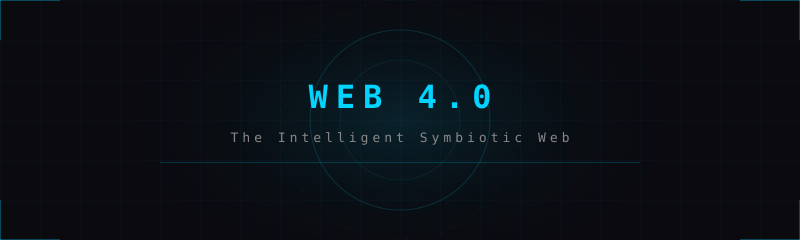

Definition
Web 4.0 is the conceptual next evolution of the World Wide Web, envisioned as an intelligent, ultra-connected, and symbiotic web where the boundaries between human, machine, and environment dissolve. While Web 3.0 focuses on decentralisation and semantics, Web 4.0 focuses on intelligence, ubiquity, and integration — the web not as a destination you visit, but as an invisible ambient layer woven into every aspect of life.
Web 4.0 is sometimes called the "Symbiotic Web" because it describes a two-way relationship between humans and machines, where AI systems learn from and act on behalf of humans with increasing autonomy, and the digital and physical worlds become inseparable.

Key Characteristics
- Artificial Intelligence (AI) Integration — AI agents proactively assist users, predict needs, and automate tasks without explicit commands.
- Internet of Things (IoT) — Trillions of sensors and devices connected to the Internet, creating a sensory fabric over the physical world.
- Ubiquitous Computing — Computing embedded everywhere: clothing, buildings, vehicles, bodies.
- Augmented & Virtual Reality — The web experienced as an overlay on physical reality (AR) or as fully immersive environments (VR/Metaverse).
- Brain-Computer Interfaces (BCI) — Direct neural interaction with digital systems (still experimental).
- Intelligent Agents — Autonomous software agents that manage tasks, make decisions, and interact on users' behalf.
- 5G/6G Networks — Ultra-low latency, massive bandwidth enabling real-time connected experiences at scale.
The Four Webs — A Comparison
- Web 1.0 — Read. Static. One-to-many. Content delivery.
- Web 2.0 — Read-Write. Dynamic. Many-to-many. Social & participatory.
- Web 3.0 — Read-Write-Own. Decentralised. Semantic. Trustless.
- Web 4.0 — Read-Write-Own-Experience. Intelligent. Ambient. Symbiotic.
Challenges & Ethical Concerns
Web 4.0 raises profound challenges: privacy in a world of pervasive sensing, AI safety with increasingly autonomous systems, digital inequality as immersive tech requires expensive hardware, data sovereignty over biological and behavioural data, addiction risks from immersive digital environments, and the existential question of what it means to be human in a world where digital and physical are indistinguishable.